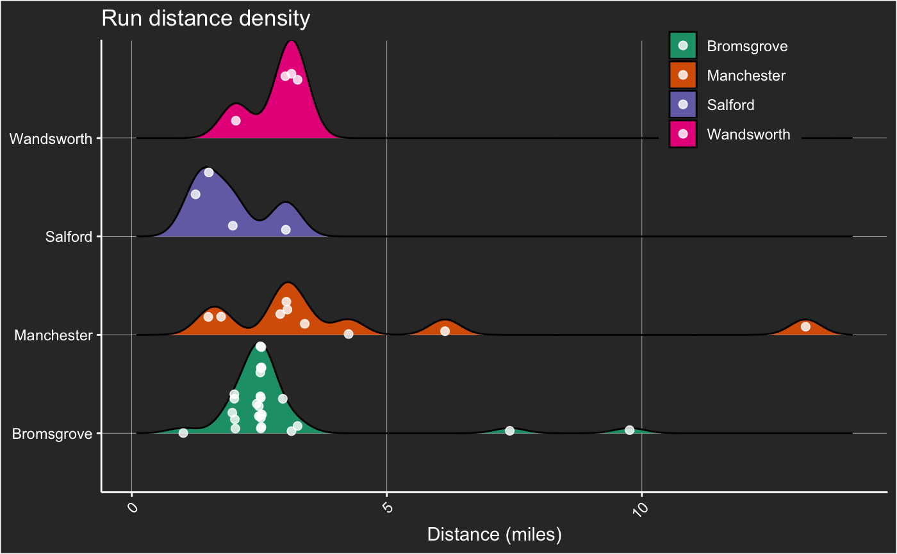
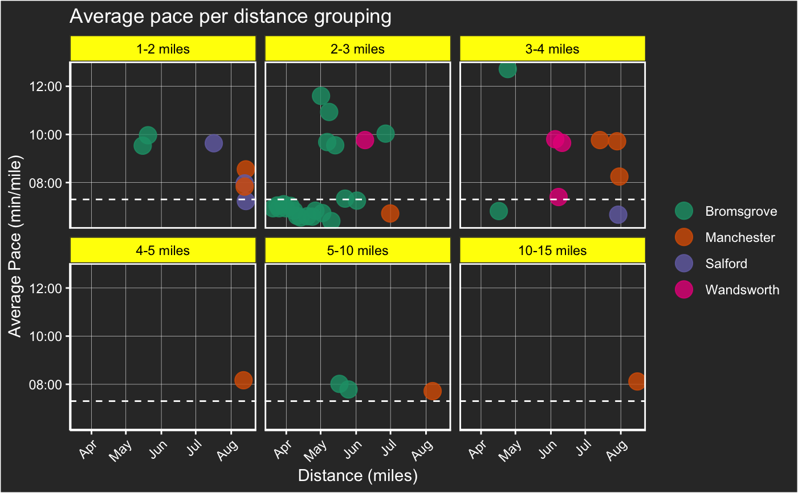

plotGarminRunning.RdA function to generate stylish plots that rapidly summarise your running performance.
plotGarminRunning( data, date_from = NA, plot = "distance", target_time = median(data$Avg.Pace) )
| date_from | a cut-off for runs that you wish to look at in the format e.g as.Date("2020-03-18") |
|---|---|
| plot | can be one of "distance", "pace", "dist_pace", "dist_time", "dist_cals", "cumulative_dist", "pace_per_dist.gp","heart.rate_dist.gp","cadence_dist.gp" |
| output | from the processGarminRunning function |
| target_pace | your half marathon time for example or a target pace that you want to run at in the format "8:00" "minutes:seconds". |
plot
#let's process my data so that it's good for R, and tidy for plotting my_runs <- processGarminRunning(data=garmin) # I'm firstly interested in how far I have ran since lockdown (COVID19 induced) plotGarminRunning(my_runs, plot = "cumulative_dist", date_from = as.Date("2020-03-18"))#> Warning: the condition has length > 1 and only the first element will be used#> Warning: the condition has length > 1 and only the first element will be used#> Warning: the condition has length > 1 and only the first element will be used# I can now clearly visualise how far I have run but what are the exact distances of those individual runs? plotGarminRunning(my_runs, plot = "dist_time", date_from = as.Date("2020-03-18"), target_time = "7:18")#> Warning: the condition has length > 1 and only the first element will be used#> Warning: the condition has length > 1 and only the first element will be used#> Warning: the condition has length > 1 and only the first element will be used#> Warning: the condition has length > 1 and only the first element will be used#> Warning: the condition has length > 1 and only the first element will be used#> Warning: the condition has length > 1 and only the first element will be used#>#there is a minor trend for runs to increase in distance particularly since moving to Manchester. #early on during lockdown I ran a lot of the same run you'll notice - around 2.5m miles #we can separate by location to look at the distance of the runs plotGarminRunning(my_runs, plot = "distance", date_from = as.Date("2020-03-18"))#> Warning: the condition has length > 1 and only the first element will be used#> Warning: the condition has length > 1 and only the first element will be used#> Warning: the condition has length > 1 and only the first element will be used#> Warning: the condition has length > 1 and only the first element will be used#> Warning: the condition has length > 1 and only the first element will be used#> Warning: the condition has length > 1 and only the first element will be used#> Warning: the condition has length > 1 and only the first element will be used#> Warning: the condition has length > 1 and only the first element will be used#> Warning: the condition has length > 1 and only the first element will be used#>#there is a great degree of variation amongst the manchester runs - for some reason salford and manchester are separated here #what about pace? How fast have I been running? Compare this to my per mile half marathon time plotGarminRunning(my_runs, plot = "pace", date_from = as.Date("2020-03-18"), target_time = "7:18")#> Warning: the condition has length > 1 and only the first element will be used#> Warning: the condition has length > 1 and only the first element will be used#> Warning: the condition has length > 1 and only the first element will be used#> Warning: the condition has length > 1 and only the first element will be used#> Warning: the condition has length > 1 and only the first element will be used#> Warning: the condition has length > 1 and only the first element will be used#> Warning: the condition has length > 1 and only the first element will be used#> Warning: the condition has length > 1 and only the first element will be used#>#You'll notice that on my longer runs I am way behind my half marathon pace - oh dear! #There are a bunch of short distance runs in which I'm considerably under. plotGarminRunning(my_runs, plot = "dist_pace", date_from = as.Date("2020-03-18"), target_time = "7:18")#> Warning: the condition has length > 1 and only the first element will be used#> Warning: the condition has length > 1 and only the first element will be used#> Warning: the condition has length > 1 and only the first element will be used#> Warning: the condition has length > 1 and only the first element will be used#> Warning: the condition has length > 1 and only the first element will be used#> Warning: the condition has length > 1 and only the first element will be used#> Warning: the condition has length > 1 and only the first element will be used#>#we can also separate according to distance grouping to monitor our face. Seemingly there are a bunch of short distance, but slow runs between 1 and 2 miles. #lots of variation in the 3-4 mile range plotGarminRunning(my_runs, plot = "pace_per_dist.gp", date_from = as.Date("2020-03-18"), target_time = "7:18")#> Warning: the condition has length > 1 and only the first element will be used#> Warning: the condition has length > 1 and only the first element will be used#what about calories? how many calories am I burning in these runs? plotGarminRunning(my_runs, plot = "dist_cals", date_from = as.Date("2020-03-18"))#> Warning: the condition has length > 1 and only the first element will be used#> Warning: the condition has length > 1 and only the first element will be used#> Warning: the condition has length > 1 and only the first element will be used#> Warning: the condition has length > 1 and only the first element will be used#>#very strong relationship between calories and distance run - strange wobble at the bottom may be related to pace! #what about heart rate? plotGarminRunning(my_runs, plot = "heart.rate_dist.gp", date_from = as.Date("2020-03-18"))#> Warning: the condition has length > 1 and only the first element will be used# you'll notice in the longer runs that the average heart rate for each run is above the median value of average heart rates across all runs. #What about cadence? plotGarminRunning(my_runs, plot = "cadence_dist.gp", date_from = as.Date("2020-03-18"))